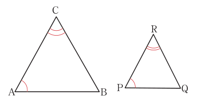

Similarity theorems
Similarly theorems are used to solve problems based on similar triangles. If ΔABC ~ ΔXYZ, it means;
To prove similarity of two triangles, only one of the following conditions is sufficient.
a Side-Side-Side (SSS) similarity theorem.
3. Two corresponding sides are proportional and one pair of corresponding angles (formed by these sides) are equal is described by the Side-Angle-Side (SAS) similarity theorem.
Angle-Angle (AA) similarity theorem
The AA similarity theorem states that, two triangles are similar if two pairs of corresponding angles are equal. This implies that, if two pairs of angles are equal, the third pair of angles will also be equal as described in Figure 3.3.

In Figure 3.3, it can be observed that,
Thus, (third pairs of angles of triangles).
Therefore, and